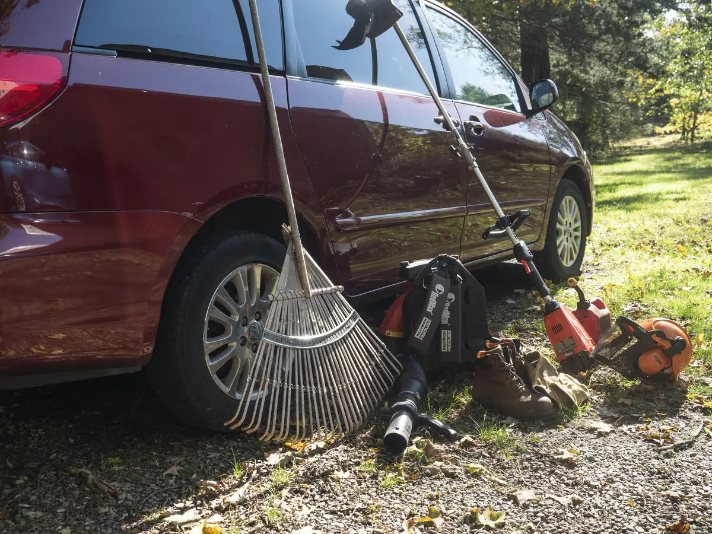

ARC YARD WORK
We rake leaves so you don't have to.
Services
Leaf and branch removal
I don't have the capacity to take refuse off-site, but I'm happy to bag it or break it down and move it into the woods.
Weeding
Digging holes
Pruning/trimming
Need something else done but don't see it listed here? Just ask!
About
Fixed rate for all services is $20/hour.
 One guy from the Connecticut shoreline! I bring my own tools and my own transport.
I'm based out of central Madison; I'll go as far west as West Haven, north as Middletown, and east as Old Saybrook. Not sure if you're in my area? Check the map!
(To cover gas and time spent on the road, jobs more than 12 miles away are $10 extra.)
Service Area
Contact
Call (203) 833-3068 or write alex@arcyardwork.co to get a quote.